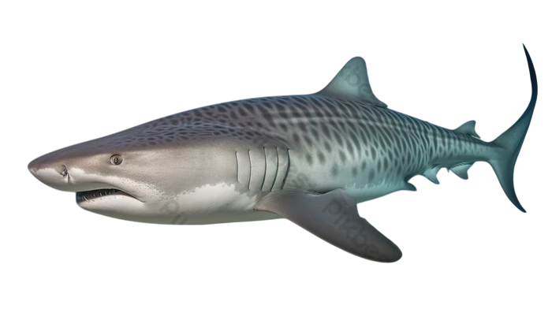

| índice: |
| -Descripción |
| -Reproducción |
| -Alimentación |
| -Comportamiento |
| -Distribución y Hábitat |
| -Características de su mordida |
| -Tiburón Tigre cazando |
El tiburón tigre (Galeocerdo cuvier) es una especie perteneciente a la familia Carcharhinidae y único representante vivo del género Galeocerdo. De cuerpo corpulento, ha llegado a alcanzar un peso máximo de más de 850 kg y unos 5,5 metros de largo. El tiburón tigre es considerado un superpredador, lo que significa que no tiene depredadores naturales y se sitúa en el primer puesto de su cadena alimentaria.
Este animal debe su nombre a la serie de rayas transversales que tiene tanto en el dorso como en el costado, las cuales son más intensas cuanto más jóven es el ejemplar.El tiburón tigre presenta dimorfismo sexual, siendo las hembras más pequeñas (miden unos 4 metros) que los machos (más de 5 metros). De hecho, es uno de los tiburones más grandes existentes por detrás del tiburón ballena (Rhincodon typus), tiburón peregrino (Cetorhinus maximus) y tiburón blanco (Carcharodon carcharias).
Estos tiburones no forman parejas, por lo que tanto machos como hembras pueden tener varios compañeros en el transcurso de su vida. El tiburón tigre es una especie vivípara lecitotrófica, es decir, las crías, antes de su nacimiento, se alimentan del vitelo contenido en el huevo. La madurez sexual se correlaciona con el tamaño del animal, de modo que los machos la alcanzan cuando miden cerca de los 3 metros y las hembras a los 3,45, aproximadamente. Las hembras llevan a cabo su proceso reproductivo cada tres años, generando camadas de entre 10 y hasta 80 crías, tras un periodo de gestación de 16 meses.
Existen diferencias en cuanto a la época de reproducción según la región en donde se ubique la especie. Las hembras que habitan en el norte se aparean entre marzo y mayo, mientras que las del sur lo hacen de noviembre a enero. En ambos casos darán a luz al año siguiente, para lo que buscarán una zona protegida, aunque después del nacimiento la madre no brinda protección ni alimento a la cría, ya que nace preparada para valerse por sí sola.
El tiburón tigre es una especie que se encuentra en la cima de las tramas tróficas de los ecosistemas en donde se desarrolla. Es un superdepredador que se distingue por ser capaz de devorar prácticamente todo lo que desea, incluso grandes desechos humanos que llegan a los mares. Su dieta es bastante variada e incluye aves, diversos mamíferos marinos, otros peces, serpientes, tortugas, a las que rompe el caparazón con sus potentes dientes, y moluscos. También consume carroña y puede atacar y devorar ballenas heridas. Es precisamente ante la presencia de una presa como una ballena o sus restos cuando estos animales pueden congregarse.
Los tiburones tigre cazan utilizando una técnica de acecho más que ataques que impliquen un uso exagerado de fuerza y velocidad. Su coloración les sirve para camuflarse de una manera muy eficiente, gracias a lo que pueden sorprender a sus presas. En este sentido, estos tiburones son altamente perceptivos y sensibles a lo que ocurre a su alrededor, lo que les favorece altamente para sus acciones de caza. Cuando se alimentan de forma grupal acostumbran a emitir señales electromagnéticas para mostrar su jerarquía. De este modo, los mayores se alimentan primero y, una vez satisfechos, los más jóvenes se acercan al resto del alimento.
Los tiburones tigre son de hábitos solitarios y principalmente nocturnos en cuanto a la alimentación. Solamente se agrupan para el momento de la reproducción o cuando coinciden en zonas de alimentación con la presencia de suficientes presas. A pesar de no tener costumbres gregarias, existe un rol jerárquico que es ejercido por los individuos mayores.
Aunque los tiburones rara vez muerden a los humanos, se informa que el tiburón tigre es responsable de una gran parte de los incidentes fatales de mordeduras de tiburones y se considera una de las especies de tiburones más peligrosas. A menudo visitan arrecifes poco profundos, puertos y canales, creando la posibilidad de encontrarse con humanos.
Esta especie se encuentra en las aguas templadas y cálidas de todos los océanos. Concretamente se distribuye en aguas tropicales y subtropicales de Oceanía, el Sudeste asiático, el norte de Japón y el sur de Nueva Zelanda.
También se puede encontrar en aguas costeras de todo el océano índico, además de la costa del Pacífico desde el sur de California al norte de Chile. En el Atlántico, se encuentra desde Río de la Plata hasta la región de Nueva Inglaterra, especialmente en el mar del Caribe y el golfo de México. En áfrica, está presente bordeando la costa noroeste alcanzando Marruecos y las Islas Canarias.
|
Los dientes del tiburón tigre son únicos, con dientes muy afilados y pronunciados y una punta inconfundible que apunta hacia un lado. Esta dentición se ha desarrollado para cortar carne, huesos y otras sustancias resistentes, como los caparazones de las tortugas. Como la mayoría de los tiburones, sus dientes son reemplazados continuamente por hileras de dientes nuevos a lo largo de la vida del tiburón. En relación con el tamaño del tiburón, los dientes del tiburón tigre son considerablemente más cortos que los de un gran tiburón blanco, pero son casi tan anchos como la raíz que los dientes del gran tiburón blanco y posiblemente sean más adecuados para cortar presas de superficie dura. |